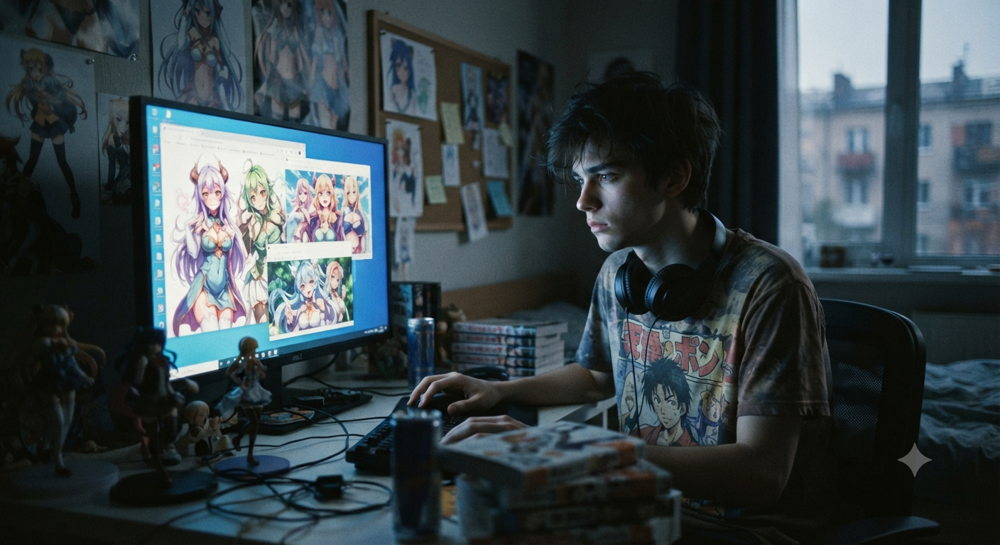
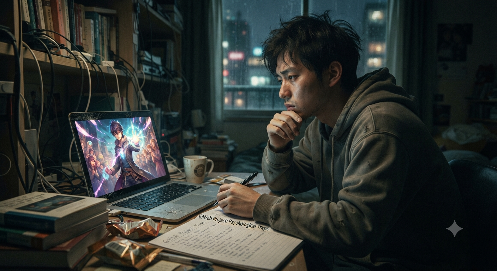
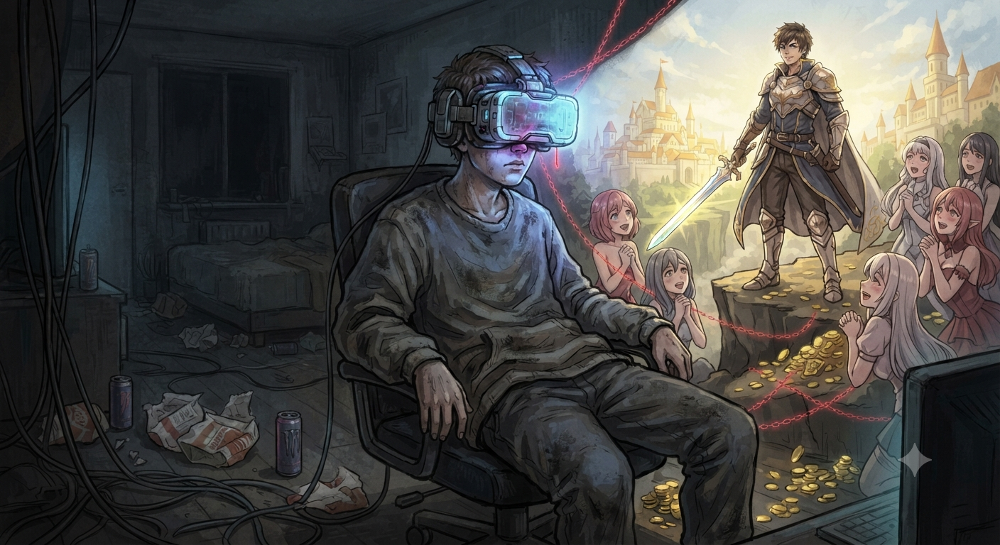
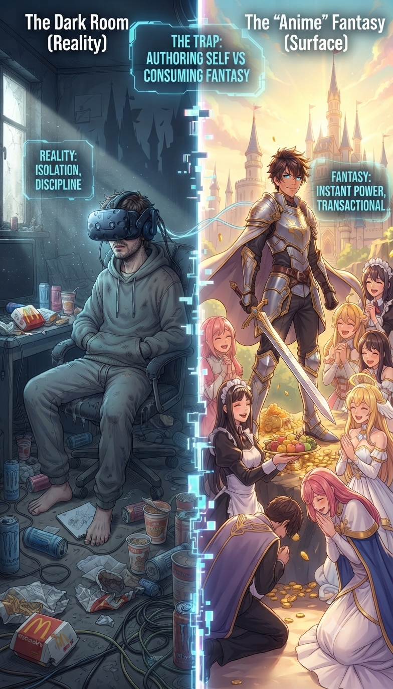

In the current morden world many teenager and childern consume large amount of social media and in social media their are many fake beauty and emotin standerd teenager consumesand and their mind make it a standerd of livig but in real life their are no power no one gona change you untail you dicided to change it their are just internal war not any extarnal badass powerfull thing

In the most of anime and mainly isekai had the main charactor with many power even reality beands for him but is real life you are just a normal guy you had to sragule for ever single thing every thing has cost you can't buy a relation like anime you have to maintain it for real anyone gona be bigger then you so you have to improve your self every sinal day if you din't no one is stop for you life happen with you their are no warning and anything your life depend what you done gardless of emotion and situation

In this stage of life people cant just take anime it compair himself to the imagenary main charactor who had everthig without any struggle and hard work everting is perfect for him they just buy relation for and loyel partner like a object they had many girls they become hero without any hardwork and even reality beands for him
Ex: like a hero die and magically born in new world with a many magical power without any hardwork and in this word everthing is perfect and pice full hero get everthing without any hardwok and it has many inocet girls and all valuble things become a object for him and they live his life like a hero who had everythig without cost

Note= everthig had cost and you have to build and maintain it
| Aspect | The "Anime" Fantasy (Surface) | The Dark Room (Reality) |
|---|---|---|
| Growth | Instant, via external power-ups | Gradual, via internal discipline |
| Relationships | Transactional, physical product | Complex, requires sacrifice/time |
| Validation | The goal (society's approval) | The trap (destroys self-authorship) |
| Motivation | External (girls, fame, status) | Internal (The "Architect's" will) |
| Difficulty | Optional (you can quit/restart) | Automatic, permanent, unavoidable |
| Outcome | Perfect, idealized, static | Evolving, flawed, but real |

If you want to escape a trap you should be acsept the reality of world becouse this trapes is made you to fall by your self start with small changes minimise the conseption of anime and increase the outside activity this slowley ereaze the effect of fiction and it get you back in reality.